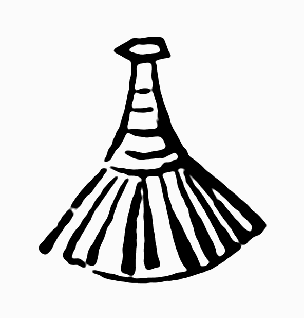
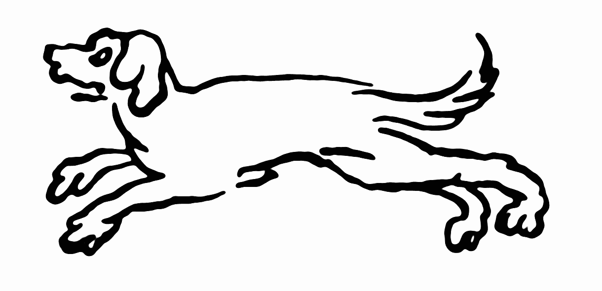

Part 1: Letters from Venice to Wilibald Pirkheimer, 1506-7
Introduction
This page contains the full text of the book Records of Journeys to Venice and the Low Countries, Rudolf Tombo's 1913 translation of Dürer's 1506-7 Venetian Letters and his 1520-1 Netherlands Diary. In addition to the text itself, which can be found elsewhere online, I have added here extra images and annotations to help fill in the details of the rich, 16th-century world Dürer paints in his writings. The original translation contains some editor's notes; these are retained in the text itself. My notes appear to the side. Clicking the orange button below will remove them from the page, leaving only the original text (and my added images).
I have drawn my notes from a wide range of sources. Any information that cannot be found with a simple online search will be cited. By far the most useful resource for me has been the endnotes of Rudolf Eitelberger's Dürers Briefe, Tagebücher und Reime, the third volume of the Quellenschriften für Kunstgeschichte und Kunsttechnik des Mittelalters und der Renaissance, published in Vienna in 1872. A scan of the entire text is available online; it contains additional letters which have yet to be translated into English, as well as some which are only available in William Martin Conway's 1964 translation The Writings of Albrecht Dürer.
Dürer's letters and diaries, written in a shockingly modern-sounding voice, help serve to humanize the past and those who lived in it. I hope you find as much interest and joy in them as I do!
- Hide Sidenotes
Cast of [some of the] Characters:
Agnes Dürer née Frey (1475–1539): Married Albrecht on July 7th, 1494. She was the subject of several portraits by Albrecht. During his 1505-7 trip through Italy she remained in Nuremberg and ran Albrecht's workshop; she accompanied him to the Netherlands in 1520-1
Wilibald Pirkheimer (1470-1530): German lawyer, author and Renaissance humanist, a wealthy patron in 16th century Nuremberg; Dürer's best friend

Michael Wolgemut 1434–1519): The master painter with whom Dürer began formal training as an apprentice. Later, Dürer painted a richly detailed portrait of him.

Giovanni Bellini (c. 1430–1516): Famous Renaissance painter and contemporary of Dürer, he came from the famed Bellini family of Venetian painters.
Jan van Eyk (c. before 1390–1441: Famous Flemish Renaissance painter.
Hans Imhoff, the elder: of the patrician Imhoff family of Nuremberg; the younger Imhof, a close friend of Dürer and Pirkheimer, was in Venice representing the Imhoff Trading Company. Numerous Imhoff's appear throughout the text.
Kunz Schott (d. 1526): also known as Konrad Schott von Schottenstein; an enemy of the town of Nuremberg. In 1497, Schott was named Burgrave of Castle Rothenberg. Nuremberg, about three hours from Rothenberg, also wanted the land, and in 1499 a bloody feud broke out between Schott and Nuremberg; even after the feud legally ended Schott was despised in the city.
Weisweber: A Nuremberg general.
Forms of Money Referred to in the Letters
Marcelli: A Venetian coin worth 10 soldi.
Stiver A Netherlandish coin worth about 80 pfennigs.
Philip's A Netherlandish coin worth rather less than a Rhenish florin.
Crown: A Netherlandish coin worth 6.35 marks.
Noble The Rosennobel = 8 marks, 20 pfennigs. The Flemish noble = 9 marks, 90 pfennigs.
Blanke A silver coin = 2 stivers.
Angel: An English coin = 2 florins, 2 stivers Netherlandish.
Part 1: Letters from Venice to Wilibald Pirkheimer
Venice, 6th January, 1506
To the Honourable and wise Wilibald Pirkheimer, in Nuremberg.
My dear Master, To you and all yours, many happy good New Years. My willing service to you, dear Herr Pirkheimer. Know that I am in good health; may God send you better even than that. Now as to what you commissioned me, namely, to buy a few pearls and precious stones, you must know that I can find nothing good enough or worth the money: everything is snapped up by the Germans.
Those who go about on the Riva always expect four times the value for anything, for they are the falsest knaves that live there. No one expects to get an honest service of them. For that reason some good people warned me to be on my guard against them. They told me that they cheat both man and beast, and that you could buy better things for less money at Frankfort than at Venice.
As for the books which I was to order for you, Imhof has already seen to it, but if you are in need of anything else, let me know, and I shall do it for you with all zeal. And would to God that I could do you some real good service. I should gladly accomplish it, since I know how much you do for me.
And I beg of you be patient with my debt, for I think oftener of it than you do. As soon as God helps me to get home I will pay you honourably, with many thanks; for I have to paint a picture for the Germans, for which they are giving me 110 Rhenish gulden, which will not cost me as much as five. I shall have finished laying and scraping the ground-work in eight days, then I shall at once begin to paint, and if God will, it shall be in its place for the altar a month after Easter.
[Editor note: This refers to the [altarpiece called the] "Madonna of the Rose Garlands," painted for the chapel of S. Bartolommeo, the burial-place of the German colony. About the year 1600 it was bought for a high price by the Emperor Rudolf II, who is said to have had it carried [over the Alps] by four men all the way to Prague to avoid the risk of damage in transport. [It suffered serious water damage during the Thirty Years' War of 1618-1648, and many parts of it had to be repainted to replace much of the original paint that was lost, but] it still remains one of the most important [and lavishly colored] of all Dürer's works.]
The money I hope, if God will, to put by; and from that I will pay you: for I think that I need not send my mother and wife any money at present; I left 10 florins with my mother when I came away; she has since got 9 or 10 florins by selling works of art. Dratzieher has paid her 12 florins, and I have sent her 9 florins by Sebastian Imhof, of which she has to pay Pfinzing and Gartner 7 florins for rent. I gave my wife 12 florins and she got 13 more at Frankfort, making all together 25 florins, so I don't think she will be in any need, and if she does want anything, her brother will have to help her, until I come home, when I will repay him honourably. Herewith let me commend myself to you.
Given at Venice on the day of the Holy Three Kings (Epiphany), the year 1506. Greet for me Stephen Paumgartner and my other good friends who ask after me.
—Albrecht Dürer
Venice, 7th February, 1506
First my willing service to you, dear Master. If it is well with you, I am as whole-heartedly glad as I should be for myself. I wrote to you recently. I hope the letter reached you. In the meantime my mother has written to me, chiding me for not writing to you, and has given me to understand that you are displeased with me because I do not write to you; and that I must excuse myself to you fully. And she is much worried about it, as is her wont. Now I do not know what excuse to make, except that I am lazy about writing and that you have not been at home. But as soon as I knew that you were at home or were coming home, I wrote to you at once; I also specially charged Castel (Fugger) to convey my service to you. Therefore I most humbly beg you to forgive me, for I have no other friend on earth but you; but I do not believe you are angry with me, for I hold you as no other than a father.
How I wish you were here at Venice, there are so many good fellows among the Italians who seek my company more and more every day—which is very gratifying to me—men of sense, and scholarly, good lute-players, and pipers, connoisseurs in painting, men of much noble sentiment and honest virtue, and they show me much honour and friendship. On the other hand, there are also amongst them the most faithless, lying, thievish rascals; such as I scarcely believed could exist on earth; and yet if one did not know them, one would think that they were the nicest men on earth. I cannot help laughing to myself when they talk to me: they know that their villainy is well known, but that does not bother them.
I have many good friends among the Italians who warn me not to eat and drink with their painters, for many of them are my enemies and copy my work in the churches and wherever they can find it; afterwards they criticize it and claim that it is not done in the antique style and say it is no good, but Giambellin (Giovanni Bellini) has praised me highly to many gentlemen. He would willingly have something of mine, and came himself to me and asked me to do something for him, and said that he would pay well for it, and everyone tells me what an upright man he is, so that I am really friendly with him. He is very old and yet he is the best painter of all.
[Editor's note: The character of Bellini agrees with all we know of him. Camerarius tells an amusing story of the two artists, to the effect that Bellini once asked Dürer for one of the brushes with which he painted hairs. Dürer produced several quite ordinary brushes and offered them to Bellini. Bellini replied that he did not mean those, but some brush with the hairs divided which would enable him to draw a number of fine parallel lines such as Dürer did. Dürer assured him that he used no special kind, and proceeded to draw a number of long wavy lines like tresses with such absolute regularity and parallelism that Bellini declared that nothing but seeing it done would have convinced him that such a feat of skill was possible.]
And the thing which pleased me so well eleven years ago pleases me no longer, and if I had not seen it myself, I would not have believed anyone who told me. And you must know too that there are many better painters here than Master Jacob (Jacopo de Barbari), though Antonio Kolb would take an oath that there was no better painter on earth than Jacob. Others sneer at him and say if he were any good, he would stay here. I have only today begun the sketch of my picture, for my hands are so scabby that I could not work, but I have cured them.
And now be lenient with me and do not get angry so quickly, but be gentile like me. You will not learn from me, I do not know why. My dear, I should like to know whether any of your loves is dead—that one close by the water, for instance, or the one like or  or 's girl so that you might get another in her stead.
Given at Venice at the ninth hour of the night on Saturday after Candlemas in the year 1506. [Editor's note: Reckoning from sunset, at this season [this] would be about 2:30 a.m.] Give my service to Stephen Paumgartner and to Masters Hans Harsdorfer and Volkamer.
—Albrecht Dürer
Venice, 28th February, 1506
First my willing service to you, dear Herr Pirkheimer. If things go well with you, then I am indeed glad. Know, too, that by the grace of God I am doing well and working fast. Still I do not expect to have finished before Whitsuntide. I have sold all my pictures except one. For two I got 24 ducats, and the other three I gave for these three rings, which were valued in the exchange as worth 24 ducats, but I have shown them to some good friends and they say they are only worth 22, and as you wrote to me to buy you some jewels, I thought that I would send you the rings by Franz Imhof. Show them to people who understand them, and if you like them, keep them for what they are worth. In case you do not want them, send them back by the next messenger, for here at Venice a man who helped to make the exchange will give me 12 ducats for the emerald and 10 ducats for the ruby and diamond, so that I need not lose more than 2 ducats.
I wish you had occasion to come here, I know the time would pass quickly, for there are so many nice men here, real artists. And I have such a crowd of foreigners (Italians) about me that I am forced sometimes to shut myself up, and the gentlemen all wish me well, but few of the painters.
Dear Master, Andreas Kunhofer sends you his service and means to write to you by the next courier. Herewith let me be commended to you, and I also commend my mother to you. I am wondering greatly why she has not written to me for so long, and as for my wife, I begin to think that I have lost her, and I am surprised too that you do not write to me, but I have read the letter which you wrote to Sebastian Imhof about me. Please give the two enclosed letters to my mother, and have patience, I pray, till God brings me home, when I will honourably repay you. My greetings to Stephen Pirkheimer and other good friends, and let me know if any of your loves are dead. Read this according to the sense: I am hurried.
Given in Venice, the Sunday before Whitsunday, the year 1506.
—Albrecht Dürer
[p.s.] Tomorrow it is good to confess.